What we use, the role each one plays, the rule for using it, and what it could be swapped for.
Criteria first, products second. Every name here is an example of a category.
Each technology is a recommendation. It becomes a decision only through an ADR, with evidence from a spike or an evaluation.
Seven layers, one modular monolith in the middle.


One language, one database, and rules that keep tenants apart.
Role application code and module boundaries
Rule modules talk only through interfaces, never through internals
Instead of: Python with FastAPI
Role system of record, queue, outbox and vector index
Rule no transaction stays open during an external call
Instead of: MySQL, CockroachDB
Role tenant isolation enforced by the database
Rule tenant context is set per request, and a missing context returns nothing
Instead of: schema per tenant
Role knowledge retrieval
Rule every query carries tenant and source filters
Instead of: Qdrant, OpenSearch
Role durable jobs, retries and delayed jobs
Rule enqueue in the same transaction as the change, and keep consumers idempotent
Instead of: BullMQ, RabbitMQ, SQS
Role rate limits and short-lived data, documents and media
Rule nothing durable lives only in Redis, objects are private with signed URLs
Instead of: in-memory, GCS or Azure Blob
Models, retrieval, contracts and the evidence that they work.
Role model access with routing
Rule vendor types never leave the adapter, and model, latency and usage are recorded
Instead of: OpenAI, Google, self-hosted
Role text vectors for retrieval
Rule index and query use the same model version
Instead of: Voyage AI, OpenAI, BGE or E5
Role find the evidence
Rule vector plus keyword, fused and thresholded, with a reranker only if evaluation shows a gain
Instead of: a dedicated search engine
Intent and risk classification, rolling summaries, handoff bundles.
Customer replies, grounded in retrieved evidence and verified tool results.
Hard cases that need more reasoning, and judging evaluation runs.
Chosen on correctness, groundedness, latency and cost per resolved conversation.
Role typed, validated tool calls
Rule schema with additionalProperties false, and validation before execution
Instead of: TypeBox, Pydantic
Role regression suite and release gate
Rule deterministic assertions gate release, and model judges are one signal only
Instead of: DeepEval, a custom runner
Role replayable traces of model calls
Rule redact before sending, and sample by policy
Instead of: LangSmith, OpenTelemetry GenAI conventions
What customers and staff touch, and how we know who they are.
Role customer chat on the website
Rule Shadow DOM isolation, no secrets in the bundle, works under a strict CSP
Instead of: React
Role agent inbox and admin screens
Rule the UI hides, the API denies
Instead of: Vue, Angular
Role live messages
Rule persist first, push second
Instead of: long polling
Role staff login
Rule no password handling in our code, authorization stays in the app
Instead of: Ory, WorkOS
Role widget session for customers
Rule short lifetime, scoped claims, verified on every call
Instead of: opaque tokens
Role later channels
Rule same canonical event contract as website chat
Instead of: other providers
Real-time voice on the same engine and the same authorization.

Role real-time audio
Rule access tokens are short-lived and scoped to one conversation
Instead of: Twilio Voice, Daily
Role speech in and speech out
Rule cancel on barge-in, and keep no raw audio by default
Instead of: Whisper self-hosted
Role low-latency voice option
Rule tool calls still pass through our authorization
Instead of: the modular pipeline
Reaching business systems without handing over the keys.
Role reach business systems
Rule one interface, typed errors, timeout and idempotency
Instead of: vendor SDKs inside adapters
Role credentials
Rule reference by id, never in logs, prompts or the repository
Instead of: Vault, Doppler
Role trust inbound events
Rule HMAC and timestamp check, deduplicate by event id
Instead of: provider SDK verifiers
Role validation at the edges
Rule validate requests, adapter boundaries and model output
Instead of: TypeBox
Role uploads you can trust
Rule content sniffing and a malware scan before indexing, private by default
Instead of: managed scanning
Role survive flaky providers
Rule bounded attempts with jitter, and an open breaker fails fast
Instead of: a custom implementation
Test with real databases, scan every change, ship behind flags.
Role unit and integration tests
Rule use a real Postgres for tenant and authorization tests
Instead of: Jest
Role end-to-end and load tests
Rule cover widget and console critical paths, and run load tests before each release
Instead of: Cypress
Role static, secret and dependency scans
Rule Semgrep, gitleaks and Trivy are required checks on every merge
Instead of: Snyk, SonarQube
Role traces, metrics and logs
Rule trace id on every request and job, no personal data in labels
Instead of: Datadog
Role automation and packaging
Rule trunk-based, no manual production deploys, one image runs as API and worker
Instead of: GitLab CI
Role infrastructure and flags
Rule environments are reproducible, and every risky feature ships behind a flag
Instead of: Pulumi

Which technologies each epic and Sprint relies on.
| Epic | Key technologies |
|---|---|
| E01 Tenant and access | Postgres RLS, Testcontainers, OIDC, jose tokens |
| E02 Conversation core | NestJS, WebSocket, Postgres sequences, outbox |
| E03 Website chat | Preact Web Component, JWT sessions, Redis rate limits |
| E04 Knowledge and RAG | S3, ClamAV, pg-boss, pgvector with full-text |
| E05 AI orchestration | State machine, LLM adapter, AbortController, Langfuse |
| E06 Safe business tools | Ajv, connector adapters, idempotency keys, audit table |
| Epic | Key technologies |
|---|---|
| E07 Human handoff | SKIP LOCKED claims, WebSocket updates, React console |
| E08 Tickets | Postgres, keyset pagination, TanStack Table |
| E09 Voice MVP | LiveKit, STT and TTS adapters, voice activity detection |
| E10 Workflow, routing, SLA | Workflow state machine, pg-boss timers, Temporal evaluated |
| E11 Integrations and channels | Secret manager, HMAC webhooks, email and messaging adapters |
| E12 Observability, evaluation, usage | OpenTelemetry, Grafana, promptfoo, Langfuse |
| Sprint | Introduced |
|---|---|
| Sprint 0 | Docker Compose, CI, Terraform skeleton, migrations, secrets |
| Sprint 1 | NestJS, row-level security, audit table, OpenTelemetry, Testcontainers |
| Sprint 2 | Preact widget, WebSocket gateway, JWT sessions, Playwright |
| Sprint 3 | Object storage, ClamAV, parsers, pg-boss ingestion, pgvector |
| Sprint 4 | LLM adapter, structured outputs, citations, evaluation harness |
| Sprint 5 | Ajv tool registry, connector with breaker, React console inbox |
| Sprint 6 | Dashboards, k6, backup drill, feature flags, evaluation gate |
| Sprint 7 | LiveKit, voice activity detection, STT and TTS or speech-to-speech |
| Sprint 8 | Transcript sync, barge-in cancellation, cost and latency dashboard |

The report lists the technologies and the approach for every user story and every Sprint.
See the rapport, Part V, chapter "Technology by Task".
What we still have to validate, and how we limit lock-in.
| Decision | Options to compare | When |
|---|---|---|
| LLM provider and routing | Two or three providers and model sizes | Sprint 4 |
| Vector search | pgvector against a dedicated engine | Sprint 3 |
| Queue and outbox | pg-boss against Redis with BullMQ | Sprints 0 and 1 |
| Authentication | Keycloak, Auth0, Cognito | Sprint 1 |
| Hosting | Managed containers, Fly.io or Render, Kubernetes | Sprint 0 |
| Decision | Options to compare | When |
|---|---|---|
| Speech strategy | Modular STT and TTS against speech-to-speech | Sprint 7 |
| Voice transport and telephony | LiveKit, Twilio, Daily | Sprint 7 |
| Retention and consent | Audio and transcript retention models | Sprint 7 |
| Workflow engine | Custom state machine against Temporal | Release 3 |
| Technology | Lock-in | Mitigation |
|---|---|---|
| LLM provider | Medium | Adapter, provider-neutral tool schemas, evaluation suite to compare models |
| Embedding model | Medium | Store the model version per chunk and keep a re-index job |
| Speech and voice | High for speech-to-speech | One strategy first, thin adapters, measure before committing |
| PostgreSQL and pgvector | Low to medium | Standard SQL, retrieval behind an interface, documented switch trigger |
| Cloud services | Medium | Containers, Terraform modules, S3-compatible API |
| Observability and flags | Low | OpenTelemetry and OpenFeature as the client layers |
Spend the novelty on AI behavior, and keep everything else proven, portable and observable.
Full detail: rapport.pdf, Part V.